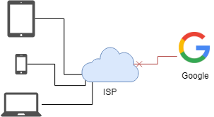
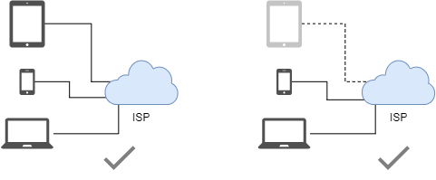

前言
本文改编自 The-truth-about-zeronet。
Tip
官方文档（已被墙）：https://zeronet.io/docs/zh/
还有在零网上的镜像（官方的）：http://127.0.0.1:43110/1DocsYf2tZVVMEMJFHiDsppmFicZCWkVv1/zh/
站点
零网站点，又称 zite1，正如其名，站点在分布式网络上分发。
抗墙能力
常规互联网

网站容易被墙。
零网

网站在每个访问者的设备上都有，难以屏蔽。
安装
要在 Windows，Mac 和 Linux 上使用零网，先得安装客户端。
访问 https://zeronet.io 并下载安装。
在大陆地区，可以在github上下载，https://github.com/HelloZeroNet/ZeroNet-win/tree/dist
访问站点
零网在本地架设服务器于 http://127.0.0.1:43110 。启动零网会自动打开浏览器。
你可以在左侧列表看到已下载的网站和一些链接，现在就打开看看吧。
至于为何说是 下载 ，这跟零网的原理有关，待会再解释。
注册 ZeroID
用户可以在互联网2 上如 Google, eBay，等网站上注册账号。而零网上注册账号，技术上是不可行的，相应的，零网引入了 证书授权站3。 例如，ZeroID，是使用得最广泛的证书授权站点，就先在这注册吧。
访问 ZeroID 并注册
Warning
如果要匿名，即隐藏IP，可以使用Tor
输入了昵称，密码呢？答案是——自动生成。零网根目录下有个 users.json 文件，注册的新账号会放在里面 : 私钥和公钥，还有昵称。不要泄露私钥给别人 - 私钥是密码。公钥就是账号。 如果 users.json 丢失或者被篡改，就没法访问你的账号了。所以要经常备份。
获取 ZeroTalk 账号
现在看下能用 ZeroID 的站点，论坛 ZeroTalk 是个很好的选择，
访问 ZeroTalk，点击 Test messages 帖子， 再点 登陆为... 选择 {你的用户名}@zeroid.bit。输入一些 Hello, world! 之类的文本再点击提交。 不想发 Hello, world! 的话，也可以发一下本教程 :)
可以点击顶部 Forums: English · Dansk · Español · Français ... 菜单栏选择相应论坛。中文论坛 New GFW Talk 。
关于作者
译者：blurHY
具体的要看github repo。